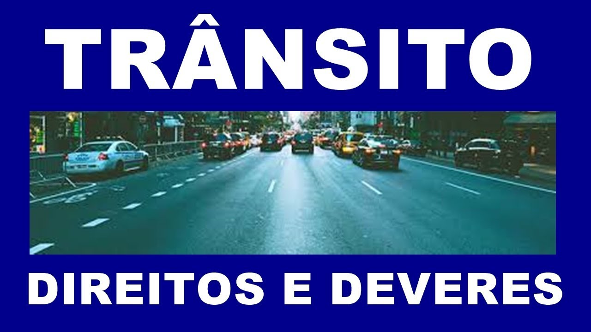
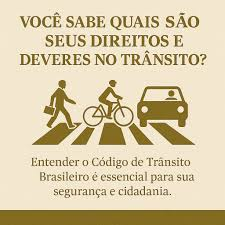
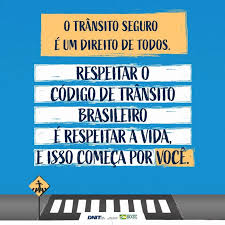

Deveres

Deveres do Motorista:

-
Principais deveres:
- Respeitar as leis de trânsito: Obedecer aos sinais de trânsito, limites de velocidade e outras normas estabelecidas.
- Garantir a segurança: Evitar acidentes, dirigir com atenção e responsabilidade, mantendo distância segura dos outros veículos e utilizando equipamentos de segurança como o cinto de segurança.
- Manter o veículo em boas condições: Realizar manutenções regulares, como verificar freios, pneus, óleo e outros componentes essenciais para o bom funcionamento do veículo.
- Respeitar os outros usuários da via: Ceder passagem quando necessário, não estacionar em locais proibidos, evitar comportamentos agressivos e respeitar a vez dos pedestres e ciclistas.
- Não dirigir sob efeito de álcool ou drogas: É fundamental evitar o consumo de substâncias que possam prejudicar a capacidade de dirigir.
- Realizar exames toxicológicos (para motoristas profissionais): Motoristas profissionais devem se submeter a exames periódicos para verificar o uso de substâncias ilícitas.
- Conhecer o veículo: É importante que o motorista conheça as características e funcionalidades do veículo que está dirigindo.
- Evitar distrações: Não utilizar o celular ou outros dispositivos eletrônicos enquanto dirige.
- Prever situações de risco: Estar atento ao ambiente ao redor e antecipar possíveis perigos para evitar acidentes.
- Cumprir a jornada de trabalho: Motoristas profissionais devem respeitar os limites de tempo de direção e descanso estabelecidos por lei.

Placas de trânsito brasileiras
 | Placa de parada obrigatoria |
 | Placa de a preferencia |
 | Placa de sentido proibido |
 | Placa de proibido virar a esquerda |
 | Placa de proibido virar a direita |
 | Placa de proibido retornar a esquerda |
 | Placa de proibido retornar a direita |
 | Placa de proibido estacionar |
 | Placa de estacionamento regulamentado |
 | Placa de proibido parar e estacionar |
 | Placa de proibido ultrapassar |
Placa de proibido mudar de faixa ou pista de transito da esquerda para direita | |
Placa de proibido mudar de faixa ou pista de transito da direita para esquerda | |
Placa de proibido transito de caminhões | |
Placa de proibido transito de veículos automotores | |
Placa de proibido transito de veículos de tração animal | |
Placa de proibido transito de bicicletas | |
Placa de proibido transito de tratores e maquinas de obras | |
 | Placa de peso bruto total maximo permitido |
 | Placa de altura maxima permitida |
 | Placa de largura maxima permitida |
 | Placa de peso maximo permitido por eixo |
 | Placa de comprimento maximo permitido |
 | Placa de velocidade maxima permitida 80kmh |
 | Placa de proibido acionar buzina ou sinal sonoro |
 | Placa de alfandega |
 | Placa de uso obrigatorio de corrente |
 | Placa de conserve-se-a-direita |
 | Placa de sentido de circulacao da via pista |
 | Placa de passagem obrigatoria |
 | Placa de vire a esquerda |
 | Placa de vire a direita |
 | Placa de siga em frente ou a esquerda |
 | Placa de siga em frente ou a direita |
 | Placa de siga em frente |
 | Placa de onibus, caminhões e veículos de grande porte mantenham-se a direita |
 | Placa de duplo sentido de circulacao |
Placa de proibido transito de pedestres | |
 | Placa de pedestre ande pela esquerda |
 | Placa de pedestre ande pela direita |
 | Placa de circulacao exclusiva de onibus |
 | Placa de sentido de circulacao na rotatoria |
 | Placa de circulacao exclusiva de bicicletas |
Placa de ciclista transite a esquerda | |
Placa de ciclista transite a direita | |
 | Placa de ciclistas a esquerda pedestres a direita |
 | Placa de pedestres a esquerda ciclistas a direita |
Placa de proibido transito de motocicletas motonetas e ciclomotores | |
Placa de proibido transito de onibus | |
 | Placa de circulacao exclusiva de caminhão |
Placa de transito proibido a carros de mao |
 | Placa de curva acentuada a esquerda |
 | Placa de curva acentuada a direita |
 | Placa de curva a esquerda |
 | Placa de curva a direita |
 | Placa de pista sinuosa a esquerda |
 | Placa de pista sinuosa a direita |
 | Placa de curva acentuada em S a esquerda |
 | Placa de curva acentuada em S a direita |
 | Placa de curva em S a esquerda |
 | Placa de curva em S a direita |
 | Placa de cruzamento de vias |
 | Placa de via lateral a esquerda |
 | Placa de via lateral a direita |
 | Placa de intersecao em T |
 | Placa de bifurcacao em Y |
 | Placa de entroncamento obliquo a esquerda |
 | Placa de entroncamento obliquo a direita |
 | Placa de juncoes sucessivas contrarias primeira a esquerda |
 | Placa de juncoes sucessivas contrarias primeira a direita |
 | Placa de intersecao em circulo |
 | Placa de confluencia a esquerda |
 | Placa de confluencia a direita |
 | Placa de semaforo a frente |
 | Placa de parada obrigatoria a frente |
 | Placa de bonde |
 | Placa de pista irregular |
 | Placa de saliencia ou lombada |
 | Placa de depressao |
 | Placa de declive acentuado |
 | Placa de declive acentuada |
 | Placa de estreitamento de pista ao centro |
 | Placa de estreitamento de pista a esquerda |
 | Placa de estreitamento de pista a direita |
 | Placa de alargamento de pista a esquerda |
 | Placa de alargamento de pista a direita |
 | Placa de ponte estreita |
 | Placa de ponte movel |
 | Placa de obras |
 | Placa de mao dupla adiante |
 | Placa de sentido unico |
 | Placa de sentido duplo |
 | Placa de area com desmoronamento |
 | Placa de pista escorregadia |
 | Placa de projecao de cascalho |
Placa de transito de ciclistas | |
 | Placa de passagem sinalizada de ciclistas |
Placa de transito compartilhado por ciclistas e pedestres | |
Placa de transito de tratores ou maquinario agricola | |
Placa de transito de pedestres | |
 | Placa de passagem sinalizada de pedestres |
 | Placa de area escolar |
 | Placa de passagem sinalizada de escolares |
 | Placa de criancas |
 | Placa de animais |
 | Placa de animais selvagens |
 | Placa de altura limitada |
 | Placa de largura limitada |
 | Placa de passagem de nivel sem barreira |
 | Placa de passagem de nivel com barreira |
 | Placa cruz de santo andre |
 | Placa de inicio de pista dupla |
 | Placa de fim de pista dupla |
 | Placa de pista dividida |
 | Placa de aeroporto |
 | Placa de vento lateral |
 | Placa de rua sem saida |
 | Placa de peso bruto total limitado |
 | Placa de peso limitado por eixo |
 | Placa de comprimento limitado |
 | Placa de serviço auxiliar área de estacionamento |
 | Placa de serviço auxiliar serviço telefonico |
 | Placa de serviço auxiliar serviço mecanico |
 | Placa de serviço auxiliar posto de combustivel abastecimento |
 | Placa de serviço auxiliar pronto socorro |
 | Placa de serviço auxiliar terminal rodoviario |
 | Placa de serviço auxiliar alimentacao |
 | Placa de serviço auxiliar borracheiro |
 | Placa de serviço auxiliar hotel |
 | Placa de serviço auxiliar área de campismo |
 | Placa de serviço auxiliar aeroporto |
Placa de serviço auxiliar transporte sobre agua | |
 | Placa de serviço auxiliar terminal ferroviario |
 | Placa de serviço auxiliar ponto de parada |
 | Placa de serviço auxiliar informacao turistica |
 | Placa de serviço auxiliar pedagio |
 | Placa de atrativo turistico |
 | Placas de identificação de rodovias |
 | Placas de identificação quilométrica |
 | Placas de orientação de destino |
 | Placas de pedágio |